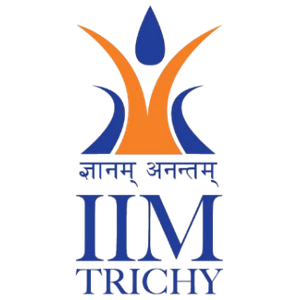

Products / Placement operations
Skynet · Placement operations
Run the placement season on one system, from the first CV to the final offer
Skynet handles applications, shortlists, interview scheduling, offers and recruiter relationships, configured to your placement policy and shared by the placement committee, the placement office, students and recruiters.
- Platform
- Skynet
- For
- Placement committees and placement offices
- In use since
- 2017
- Used at
- IIM Ahmedabad, IIM Bangalore, IIM Lucknow, XLRI Jamshedpur, IIT Bombay, IIM Mumbai and IIM Trichy
EDTEX Skynet is placement automation software that runs campus recruitment from the first CV to the final offer: applications, shortlists, interview scheduling, offers, recruiter relationships and analytics. It has run placements since 2017 at institutions including IIM Ahmedabad, IIM Bangalore, XLRI, ISB and IIT Bombay, where it scheduled 900 students across 40 companies on Day 0 with zero interview clashes.
What it does
A placement season means hundreds of companies, thousands of applications, rolling shortlists and parallel interviews, usually held together by spreadsheets and messaging groups. Skynet gives everyone one source of truth from application to offer.
CVs and applications
Every CV, job posting and application in one governed flow.
- A student portal for CVs, resume variants and live job postings
- Applications checked against eligibility and process guidelines
- Applications collected and collated automatically for every company
Shortlists and offers
From shortlist to signed offer, tracked on the busiest days.
- Company shortlists across parallel processes, without manual reconciliation
- Each student followed from application to interview to offer
- Offers and conversions reconciled through to the final report
Placement CRM for recruiters
Recruiter relationships kept across seasons rather than rebuilt each year.
- Employer profiles, job postings and communication in one system
- A record of every company interaction
- A clean, professional process for recruiters
Analytics for the placement office
Interactive dashboards on placement statistics, company engagement, student performance, conversions and bottlenecks, with custom reports for leadership, accreditation and recruiter reviews.
Every type of placement process
Final placements, summer internships, lateral placements, rolling placements, short-term virtual industry projects and industry co-op programmes, each with its own eligibility rules, calendar and policies.
Interview scheduling built in
Interviews and group discussions are scheduled automatically, and student and interview status is tracked live on Day 0 and Day 1. See the Skynet Scheduler.
What changes when placements run end to end on Skynet?
With a digital placement infrastructure, data is captured throughout the process and can be analysed at short intervals, so the committee can act before small delays become big ones. Three advantages, with use cases from IIMs, IITs, XLRI and ISB.
Clash-free Round 1 schedules and live tracking on Day 0
During placement week, anywhere from 10 to 60 companies may be interviewing at the same time, with 250 to 1,500 students taking part on a single day. At premier business schools following the day placement process, that means planning and running roughly 1,000 interviews on average. Students rank their preferred companies, recruiters rank their preferred students, and popular students appear on many shortlists, so every interview they attend affects the next one.
Skynet manages this with matching algorithms that build schedules from student and panel availability across multiple rounds. With this level of detail, top business schools in India have digitised the planning and conduct of interviews and concluded their placement process within a week.
What process coordinators get on the day
- Monitoring of interview durations and delays
- Real-time tracking of interview status and student location
- Management of students who have exited the process
- Prompt resolution of issues through SOS protocols
- 900
- students across 40 companies on Day 0 at IIT Bombay, with shortlists of 40 to 500 students
- 200
- volunteers coordinated, with zero interview clashes
Student and application data kept error-free
Placement coordinators spend their time engaging recruiters, communicating placement information across several channels, mentoring students through profile validation, handling queries and running placement-day events. When the process is only partly digitised, information does not flow between volunteers, and gathering and preparing data takes too long and invites errors.
End-to-end automation, supported by Skynet’s Zero Error Checklist, frees coordinators to engage more new recruiters, plan clash-free interview schedules quickly and give extra support to students with fewer shortlists. In 2023, ISB replaced its legacy placement platform with a customised Skynet deployment serving its Hyderabad and Mohali campuses, covering student master profiles, automatic CV generation in ISB’s format, pre-placement talk management, dream offer workflows and interview scheduling.
- 16+
- placement workflows automated at ISB
- 80%
- reduction in manual placement work at ISB
Analytics the placement office can act on during the season
Day-wise process data gives the placements chair, the placements office team and the placement committee up-to-date insight for taking corrective action mid-season, not after it. ISB’s deployment includes more than 50 custom reports and dashboards for this purpose.
What the data tracks
- Students’ domain interests
- Company participation, job descriptions and shortlists
- Validation of student profiles
- Applications by prior work experience and domain
- Shortlist sizes and offer status by domain
- Progress of the overall recruitment process
What the office can act on
- Cohorts with fewer applications and shortlists, who may need mentoring
- Companies departing from the agreed process on interview days
- Students’ participation, success and rejection metrics
- Domains with high student interest, where the committee can reach out to more recruiters
“Skynet was proactive in terms of understanding the data requirements and their use cases to present them in an easy-to-consume format.”
Virtual and hybrid placements
When the pandemic moved placements online, the same infrastructure made the switch possible. XLRI, which implemented Skynet in October 2018, ran its Summer Internship Process entirely online through Skynet’s virtual placements module. IIM Lucknow onboarded 500 students onto virtual hiring platforms before placement day, and IIT Bombay has used Skynet for virtual and hybrid placements since 2020. Read the XLRI case study.
“The implementation of Skynet at XLRI has been a tremendous success. The automation of our placement processes, coupled with the innovative virtual solutions provided during the pandemic, has significantly improved our ability to manage placements effectively.”
Configured to each institution’s process
No two premier institutions run placements the same way: dream offer rules, pre-placement talk formats, CV templates and access controls all differ. Some have stopped using non-customisable placement products even while still paying for them, because the product could not follow their process. Skynet is configured around each institution’s workflows; IIM Trichy, for example, runs 12+ tailored workflows on its own single-tenant cloud environment. Read the IIM Trichy case study.
How the placement committee runs a season
The committee configures the season once, then runs every company process from the same data.
- Set up the seasonConfigure companies, job postings, eligibility and process workflows in one place.
- Manage applicationsRun postings, collect applications and manage shortlists across every company.
- Schedule and runAutomate interview and GD scheduling, and track students and interviews live on Days 0 and 1.
- Close offersManage offers, conversions and outcomes through to a reconciled final placement report.
Students
- One login for postings, CVs and applications
- Application status, shortlists, schedules and offers
- Placement notifications and process information
Placement office and leadership
- Dashboards on the live process
- Analytics on statistics, companies and student performance
- Custom reports for leadership and recruiters
Recruiters
- Post jobs and access applications
- Communicate through a structured channel
- A process that reflects well on the institution
Trusted on placement days since 2017
Skynet runs placements at IIMs, IITs, XLRI and ISB, where placement committees run the season themselves under tight deadlines.
- IIM Ahmedabad
- IIM Bangalore

- IIM Calcutta

- IIM Lucknow

- IIM Kozhikode

- XLRI Jamshedpur

- IIT Bombay

- Indian School of Business

- IIM Mumbai
- IIM Trichy

I had the pleasure of using EDTEX Skynet for conducting placement operations for SIPs & final placements. Skynet is customizable, allowing us to design the platform entirely around our specific processes.
“EDTEX - Skynet Placement Automation Product Team have rendered their services and support for the Placement Process at IIM Bangalore since March 2020. The software has been successfully implemented.”
 Prof. Dinesh KumarPlacement Chairperson, IIM Bangalore
Prof. Dinesh KumarPlacement Chairperson, IIM Bangalore“On behalf of the Indian School of Business Careers Advancement Services team, we would like to acknowledge and highly recommend the outstanding work done by Winspire through their innovative software, EDTEX-Skynet.”
 Uday VirmaniSenior Director, Careers Advancement Services, ISB
Uday VirmaniSenior Director, Careers Advancement Services, ISB“The whole platform (Skynet - Placement Automation) is very well automated. The team was present for the entire cycle, providing robust services.”
Questions about Skynet placement automation
Short answers from our team. Anything else, ask us on the discovery call.
What is placement automation software?
Software that manages a college’s campus recruitment end to end: recruiter onboarding, job postings, student eligibility, profiles and CVs, applications, shortlists, interview scheduling, offers and analytics. It replaces spreadsheets and email chains with one system shared by the placement office, placement committee, students and recruiters.
Which placement processes does Skynet support?
Final placements, summer internships, lateral placements, rolling placements, short-term virtual industry projects and industry co-op programmes. Each process can be configured with its own eligibility rules, calendar and policies. As an optional feature, recruiters and the placement committee can share feedback on applications and interviews with students.
How does Skynet avoid interview clashes on Day 0?
Skynet uses matching algorithms that consider student preferences, recruiter shortlists and panel availability, and adjusts the schedule at company and panel level throughout the day. When a recruiter changes or cancels a process at short notice, the committee updates it at the job level and Skynet notifies every affected student, without disrupting other companies’ processes. At IIT Bombay it scheduled 900 students across 40 companies on Day 0 with zero clashes.
Can Skynet support virtual or hybrid placements?
Yes. XLRI ran its Summer Internship Process 100% virtually on Skynet, IIM Lucknow onboarded 500 students onto virtual hiring platforms before placement day, and IIT Bombay has used Skynet for virtual and hybrid placements since 2020.
Does Skynet integrate with our student information system?
Yes. Skynet integrates with student information and career management systems, including Salesforce Education Cloud, through standard APIs, so the placement committee works from the same data as the programme office.
What training does EDTEX provide for Skynet?
EDTEX trains placement office, career services and placement committee teams, and provides video guides and user manuals for students. The team also offers live support on critical placement days, when delays directly affect students and recruiters.
Placement case studies and guides
How placement committees moved their seasons onto Skynet, and our guides for placement offices.
-
Skynet, placements

Indian School of Business
Campus recruitment moved from physical processes to a fully digital platform.
Read case study -
Skynet, placements

IIM Trichy
The full placement lifecycle automated on a dedicated Skynet deployment.
Read case study -
Skynet, placements

IIM Lucknow
The entire placement operation moved to virtual hiring, at scale.
Read case study
Guides on placements
- 7+ key insights every placement committee and office needs for end-to-end placementsGuideRead the guide
- Why is real-time tracking on Day 0 and Day 1 so critical? 3 things that can go wrongGuideRead the guide
- What placement challenges do students face without modern IT systems?GuideRead the guide
Plan your next placement season with us
Tell us how your committee runs the season today. We will show you the same process in Skynet.
- Discovery call30 to 45 minutes
- Tailored demonstrationBuilt around your rules
- Pilot and deployScoped, with training

You will speak with
Arun KorupoluCo-founder & CRO
We reply within one business day.
Prefer email? connect@edtex.in